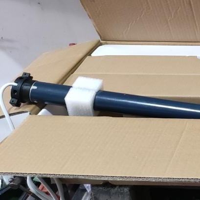

Teléfono: 11 6616-2406

Cortinas Caballito
Gente responsable y confiable con personal con más de 35 años de experiencia.
Gente responsable y confiable con personal con más de 35 años de experiencia.
Una colocacion de motor consiste en el cambio total del funcionamiento de la cortina por una parte el viejo mecanismo ya no lo molestara a la hora de levantar MANUALMENTE la cortina, ya que seria totalmente automatico usted bajaria y subiria la cortina mediante un interruptor las veces que quiera.
Apartir de su cortina antigua de madera se puede restaurar y pintar para que quede como nueva a continuacion un antes y un despues.
si su cinta para subir y bajar la cortina ya esta gastada o rota le podemos hacer un cambio desde cero de la misma

Su cortina no da para mas? quedese tranquilo llamenos para poder darle un presupuesto segun su nesesidad y podemos colocar una cortina de 0 ya sea plastico madera alumino metal etc